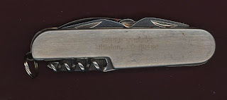
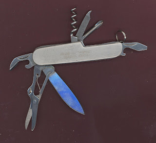

What was Maher Studios?
6/10/2010
{kind=link}

I correspond frequently with several aspiring vents ages 10-12. Recently one of them sent me this comment and question: "I read on your blog where Maher Studios closed in 2006. What was Maher Studios before 2006?"
Now, that's a question that doubles as a reality check! A reminder that while you may be a legend to one generation, to the next generation you're an unknown! Over the years I've observed this often. Now I have the pleasure of experiencing it! :-)
Now, that's a question that doubles as a reality check! A reminder that while you may be a legend to one generation, to the next generation you're an unknown! Over the years I've observed this often. Now I have the pleasure of experiencing it! :-)
{kind=link}

With that in mind, here's a very rare memento to remind some lucky blog reader of the past existence of Maher Studios, Littleton, Colorado (etched on the side of the knife). It's a nice multi-purpose pocket knife. By today's drawing it has been won by Brad Bosen. Contact Mr. D to claim this unique collectible.